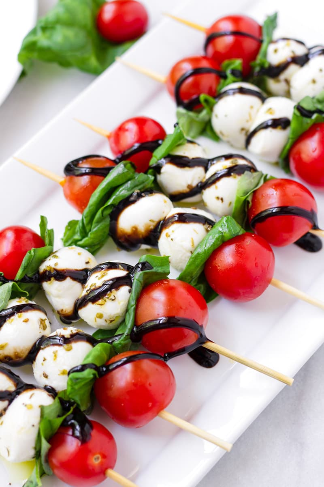
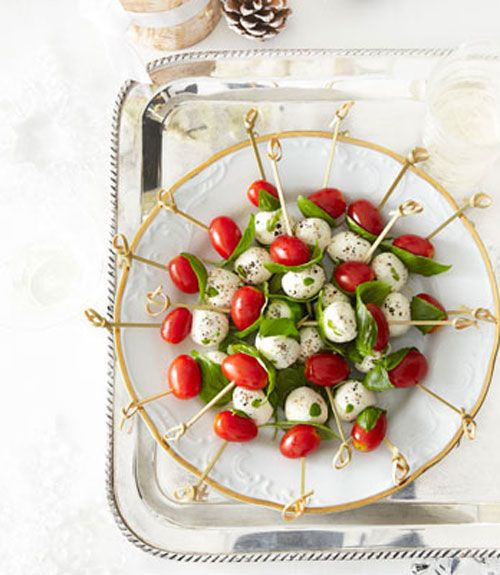
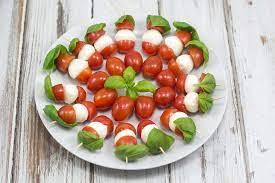

Foodies!
For All Your Delicious Needs
Author: Isabelle Grady
Hello everyone! Today I'm going to be talking about three different recipes that you can make for yourself or for others to enjoy!
1st Recipe: Tomato Mozzarella Skewers
What you will need:
- 8oz container of fresh mozzarella pearls
- 1 container of grape or cherry tomatoes
- Fresh basil leaves
- Balsamic Vinagrette
Step-By-Step:
- Skewer tomato, basil leaf, and mozzarella ball on toothpick
- Arrange on plate
- Drizzle with balsamic vinagrette
Different Arrangements
|  |
 |
 |